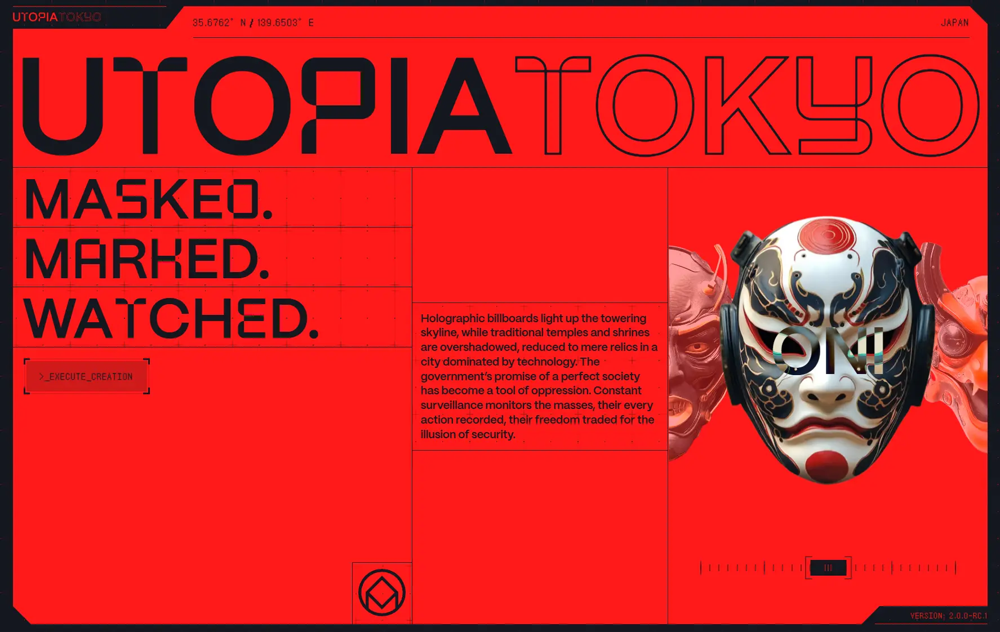

Utopia Tokyo
- Культура и искусство
- Эксперименты и спецпроекты
- Арт-проект
- Интерактив
- Технология WebGL и 3D
- Киберпанк
- Неон
- Иммерсивный 3D
- Действующий сайт

Что это
Промо-сайт проекта о японских масках, оформленный как красный терминальный HUD: плоский фон, крупная типографика и пиксельные служебные надписи. Внутри — каталог из 14 масок и генератор собственной маски с радаром характеристик. Иммерсивный сайт о японских масках в антиутопическом Токио будущего. Стилизован под киберпанковый интерфейс видеоигры.
Что смотреть в первую очередь
Разбирать как пример того, как служебный слой интерфейса (координаты, версии, хэши, кандзи) делает промо-страницу похожей на приборную панель.
Интересные факты
- Забота о людях встроена в замысел: первым экраном идёт предупреждение о вспышках, опасных для людей с фоточувствительной эпилепсией, с выбором безопасного режима. Глитч включается отдельной кнопкой, запоминается и сам выключается в Safari, на телефонах и при системной настройке «уменьшить движение».
- Сетка каталога масок управляется переменными в стилях: количество масок, число колонок и строк меняются сменой значений, а не переписыванием разметки.
- Один приём протянут через все слои: заголовок, логотип и надписи загрузочного экрана набраны чередованием залитых и контурных букв, а служебные подписи говорят языком игры — VERSION, HASH, Skill Points.
- Состояния интерфейса хранятся в служебных атрибутах разметки, а не в наборе классов: разметка, стили и анимация читают один и тот же список состояний.
- Счётчиков аналитики нет ни одного, robots.txt пустой, карты сайта нет — по части поисковой оптимизации это минимальный проект.
Паспорт
- Домен
- utopiatokyo.com
- Тип сайта
- Промо-сайт
- Категории
- Культура и искусство, Эксперименты и спецпроекты
- Подкатегории
- Арт-проект, Интерактив, Технология WebGL и 3D
- Для кого
- Дизайнерам, Разработчикам, Геймерам
- Стиль
- Киберпанк, Неон, Иммерсивный 3D
- Язык
- Английский
- Страна
- Япония
- Автор
- арт-дирекшн Spotheroz, разработка Andrew Measham
- Год
- 2026
- Добавлен в коллекцию
- 30.09.2026
Палитра
-
#FF1A1A— 73% кадра -
#17171E— 13% кадра -
#C42323— 4% кадра -
#871919— 3% кадра -
#4F0C0F— 1% кадра
- Режим
- Цветная
- Цвет фона
- Красный
Технологии
- Webflow
- GSAP 3.14.1
- Barba.js 2.10.3
- Lenis 1.3.17
- Spline (3D)
- Авторский бандл на стороннем CDN
- Cloudflare